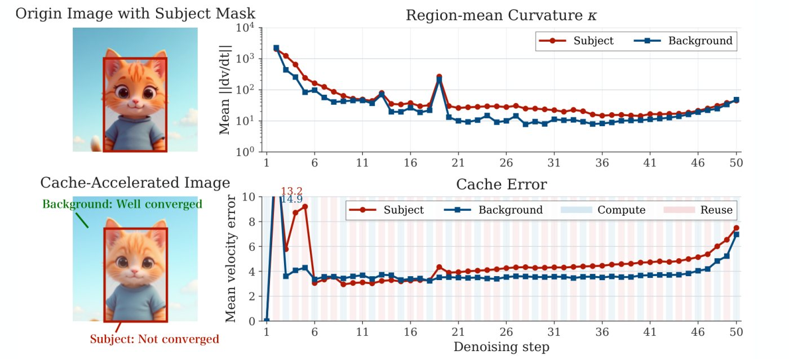
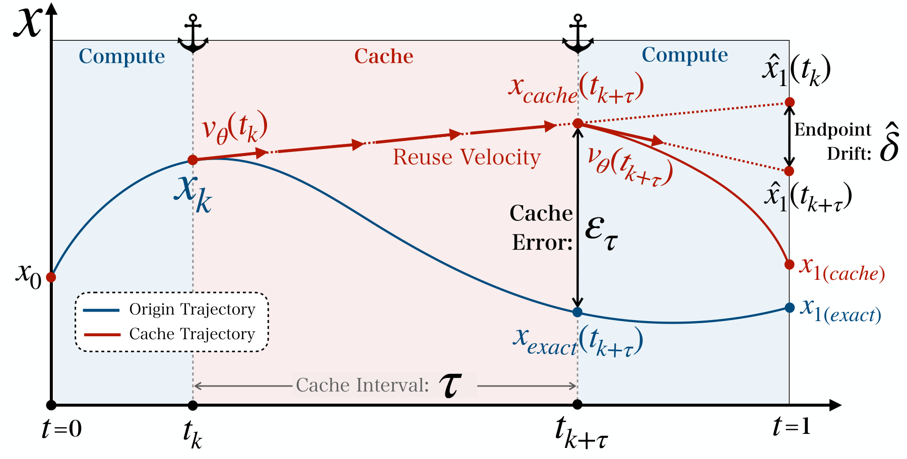
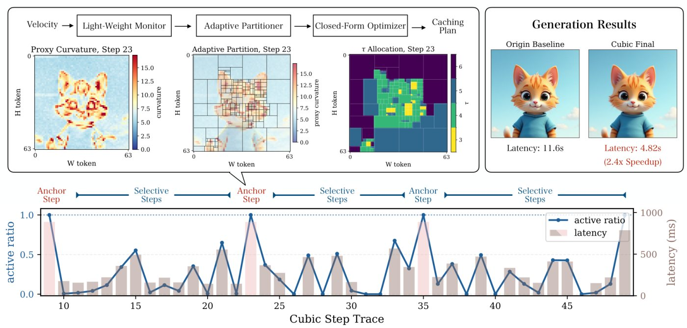
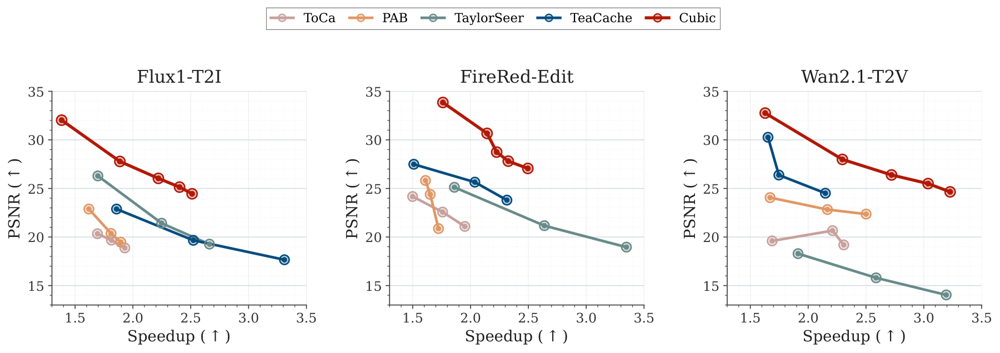
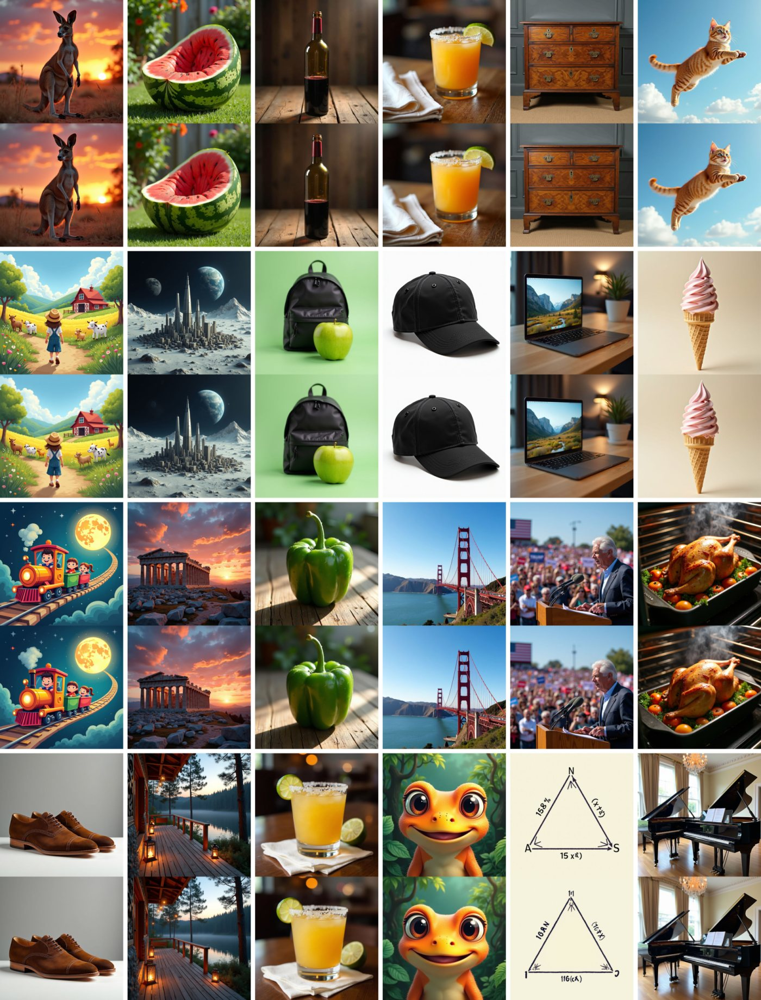
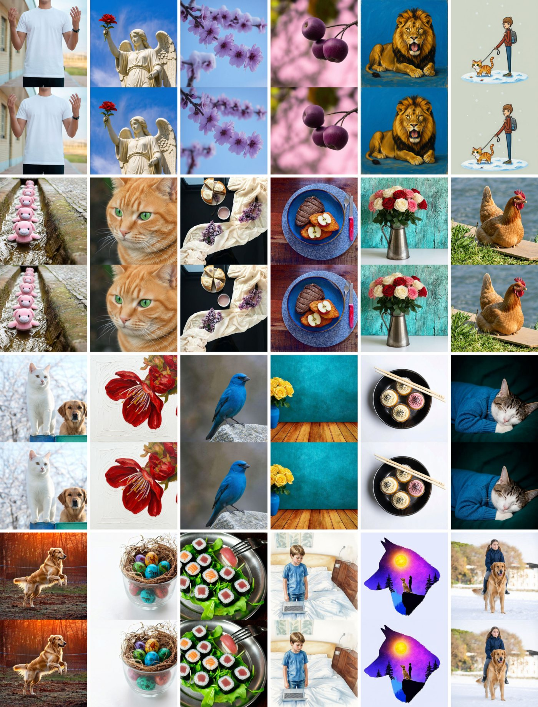
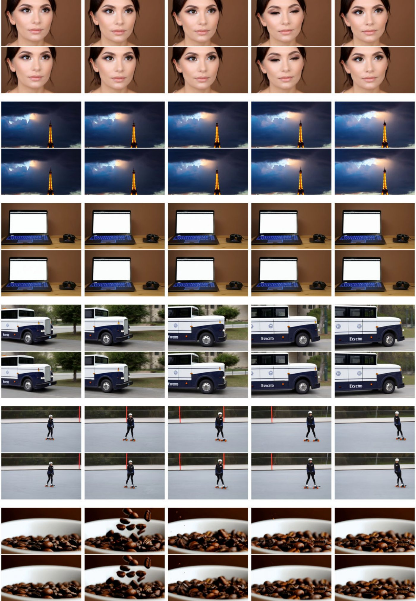
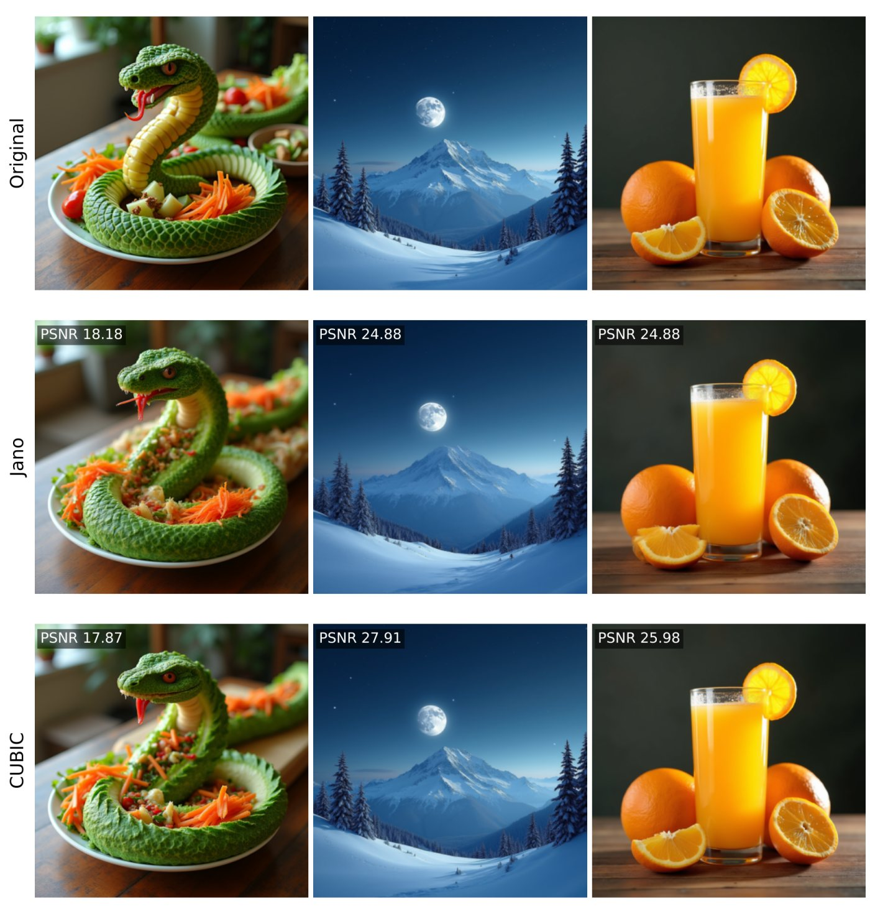

Hover over any point to see what that method actually generates at that speed. Every point is a real run of the same prompt and seed.
Single prompt and seed on one NVIDIA H20; each method's speedup is normalized by the uncached run on its own code path, and PSNR/LPIPS are measured against that uncached output. The full multi-prompt benchmark is in Results.
Flow Matching (FM) has emerged as the dominant paradigm for state-of-the-art image and video generation, yet its reliance on full attention over lengthy sequences incurs significant latency. While existing caching methods reduce redundant computations, they yield suboptimal performance, fundamentally constrained by inflexible spatial granularity and empirical, model-specific heuristics.
To bridge this gap, we ground the caching mechanism in the geometric properties of the FM velocity field. We theoretically establish that the curvature inherently dictates the coupling between trajectory fluctuation and computational requirements, thereby providing a principled metric to quantify caching staleness loss and derive update intervals that minimize this loss under a compute budget.
Translating this theoretical insight into practical acceleration, we present Cubic, a train-free caching framework. It bypasses expensive curvature computations via a lightweight proxy signal that dynamically guides spatial partitioning and budget-constrained update scheduling. At the system level, a sparse forward engine executes these schedules efficiently, turning the reduced token computation into actual FLOP savings and near-linear speedup. Being model-agnostic and controlled by a user-specified acceleration target, Cubic consistently outperforms state-of-the-art caching baselines in quality at customizable acceleration ratios (averaging 2.5×) across Wan2.1, Flux.1, and FireRed-Image-Edit.
Different regions of the same image evolve at different rates. The subject keeps a high trajectory curvature for most of the denoising process, while the background flattens early. A uniform caching schedule therefore wastes compute on the background and under-refreshes the subject, which is where cache errors become visible.

Reusing a velocity computed at step tk for an interval τ makes the cached trajectory drift away from the exact one. Under a forward-Euler abstraction, this drift is governed by the local curvature κ of the trajectory. Minimizing the total curvature-weighted error under a fixed compute budget gives a closed-form allocation:
Flat blocks get long intervals and curved blocks are refreshed often. Curvature itself is estimated cheaply from the endpoint drift between consecutive anchor steps, without computing Jacobians.


Endpoint drift reuses the latent and velocity already available at anchor steps, with about 1.6 ms overhead versus 600 ms for exact Jacobians.
Tokens are grouped into spatially coherent blocks, so neighbors that attend strongly to each other share the same cache age.
Only active blocks are recomputed; a layer-wise KV pool is refreshed in place, turning token savings into real wall-clock speedup.

Fidelity is measured against the uncached model with the same prompt and seed. Latency is measured on NVIDIA H100. std and fast are two target-speedup settings.
| Method | Latency (s) ↓ | Speedup ↑ | PSNR ↑ | SSIM ↑ | LPIPS ↓ | FID ↓ | HPSv3 ↑ |
|---|---|---|---|---|---|---|---|
| Baseline | 11.59 | – | – | – | – | – | 10.68 |
| PAB | 6.40 | 1.81× | 20.37 | 0.770 | 0.257 | 77.37 | 10.65 |
| TeaCache | 6.24 | 1.86× | 22.88 | 0.851 | 0.149 | 45.87 | 10.83 |
| ToCa | 6.39 | 1.81× | 19.68 | 0.749 | 0.273 | 70.76 | 10.62 |
| TaylorSeer | 6.83 | 1.70× | 26.29 | 0.892 | 0.099 | 26.80 | 10.82 |
| Cubic (std) | 6.14 | 1.89× | 27.78 | 0.900 | 0.095 | 27.81 | 10.87 |
| Cubic (fast) | 4.82 | 2.40× | 25.14 | 0.846 | 0.173 | 47.32 | 10.97 |
| Method | Latency (s) ↓ | Speedup ↑ | PSNR ↑ | SSIM ↑ | LPIPS ↓ | FID ↓ | HPSv3 ↑ |
|---|---|---|---|---|---|---|---|
| Baseline | 39.14 | – | – | – | – | – | 8.17 |
| PAB | 23.70 | 1.65× | 24.39 | 0.889 | 0.093 | 39.41 | 7.95 |
| TeaCache | 16.91 | 2.31× | 23.80 | 0.896 | 0.100 | 41.03 | 7.83 |
| ToCa | 20.06 | 1.95× | 21.09 | 0.788 | 0.178 | 67.25 | 7.18 |
| TaylorSeer | 21.04 | 1.86× | 25.12 | 0.910 | 0.084 | 33.70 | 8.07 |
| Cubic (std) | 18.26 | 2.14× | 30.67 | 0.954 | 0.047 | 18.55 | 8.00 |
| Cubic (fast) | 16.83 | 2.33× | 27.81 | 0.920 | 0.091 | 32.18 | 7.90 |
| Method | Latency (s) ↓ | Speedup ↑ | PSNR ↑ | SSIM ↑ | LPIPS ↓ | FVD ↓ | VBench ↑ |
|---|---|---|---|---|---|---|---|
| Baseline | 101.54 | – | – | – | – | – | 79.90 |
| PAB | 40.60 | 2.50× | 22.36 | 0.800 | 0.167 | 57.78 | 78.41 |
| TeaCache | 61.44 | 1.65× | 30.27 | 0.927 | 0.045 | 11.72 | 79.79 |
| ToCa | 44.00 | 2.31× | 19.19 | 0.738 | 0.241 | 84.04 | 78.42 |
| TaylorSeer | 39.24 | 2.59× | 15.80 | 0.641 | 0.352 | 137.06 | 78.82 |
| Cubic (std) | 62.35 | 1.63× | 32.76 | 0.948 | 0.032 | 7.92 | 79.37 |
| Cubic (fast) | 37.32 | 2.72× | 26.39 | 0.874 | 0.099 | 31.76 | 80.03 |



Jano is the closest token-level caching method. We tune Cubic on separate prompts and evaluate both methods on held-out prompts with Jano's official default configuration (32 Flux and 24 Wan samples on NVIDIA H20). All fidelity improvements are significant under a paired Wilcoxon test (p < 10−4).
| Model | Method | Speedup ↑ | PSNR ↑ | SSIM ↑ | LPIPS ↓ |
|---|---|---|---|---|---|
| Flux.1-dev | Jano | 2.18× | 21.93 | 0.788 | 0.225 |
| Cubic | 2.43× | 23.47 | 0.842 | 0.145 | |
| Wan2.1-1.3B | Jano | 2.28× | 20.64 | 0.766 | 0.147 |
| Cubic | 2.36× | 23.78 | 0.843 | 0.096 |

git clone https://github.com/chen-yy20/CuBic.git && cd CuBic
uv sync && source .venv/bin/activate
# Wan2.1 text-to-video with a target selective-phase speedup
python launch.py --model wan --method cubic --launcher python \
--model-path /path/to/Wan2.1-T2V-1.3B -- --target_speedup 6See the README for Flux, FireRed, baselines and evaluation scripts.
@inproceedings{chen2026cubic,
title = {{CUBIC}: Curvature-Driven Dynamic Inference Caching for Fast, High-Fidelity Flow Matching},
author = {Chen, Yuyang and Zeng, Linqian and Zhou, Yijin and Li, Hengjie and Zhai, Jidong},
booktitle = {Advances in Neural Information Processing Systems},
year = {2026}
}